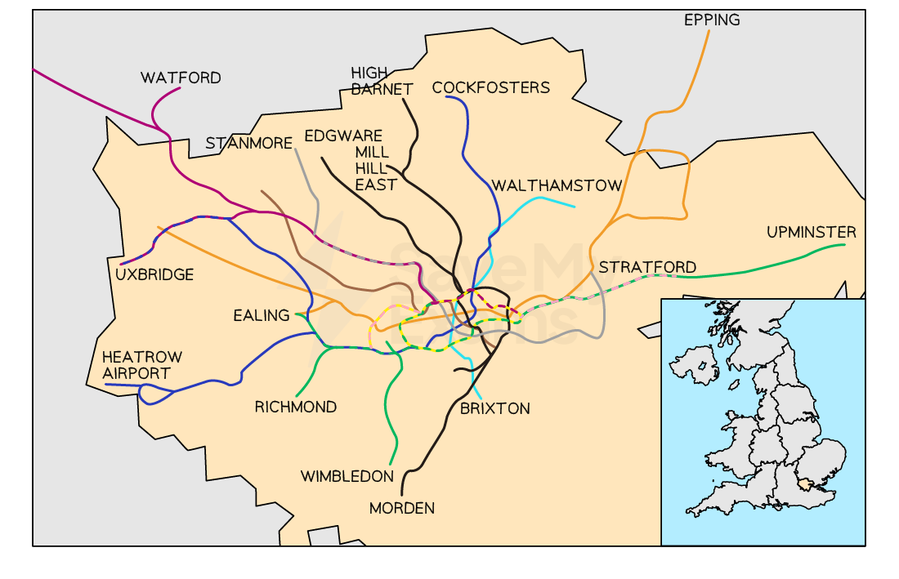
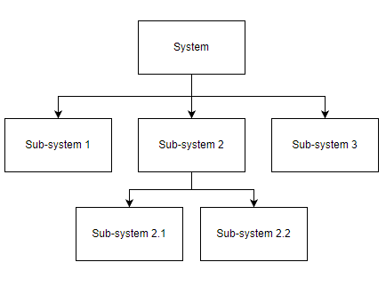
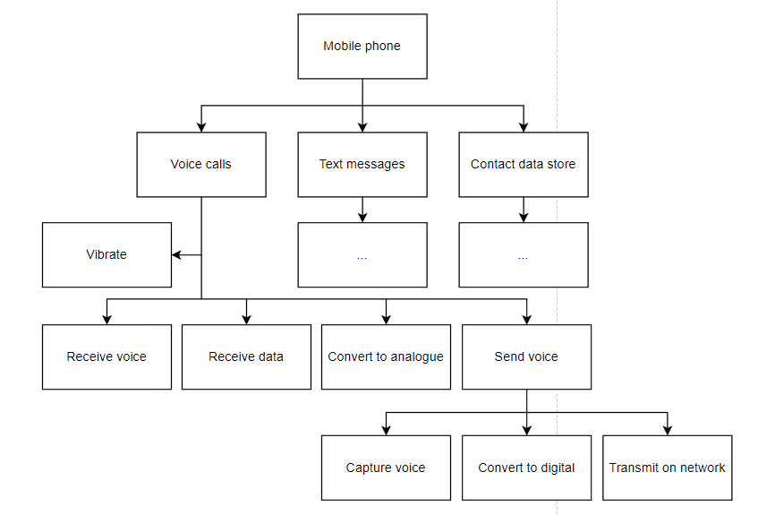
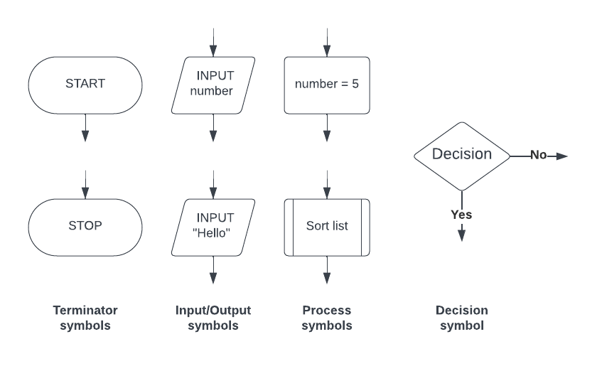
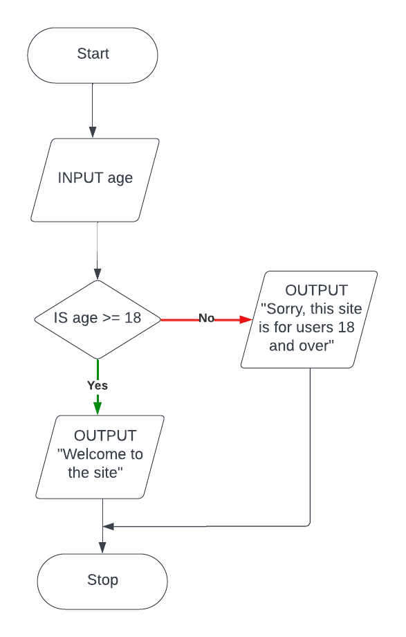
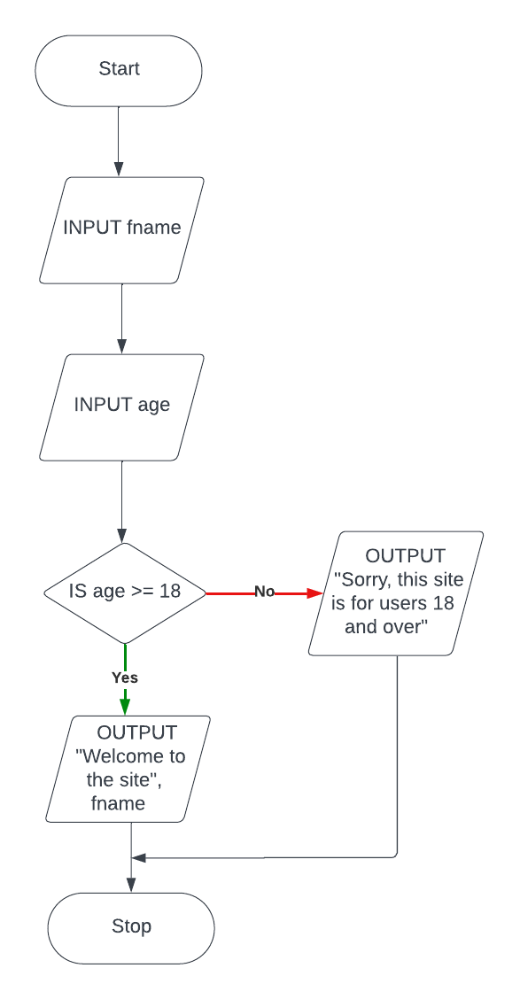
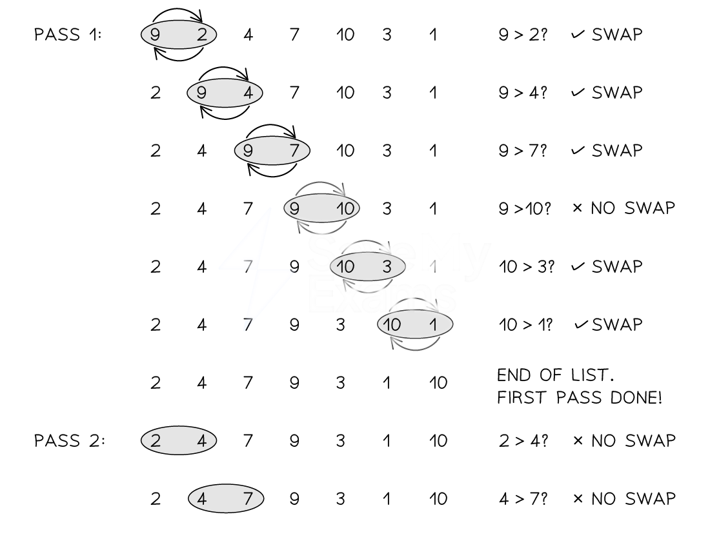
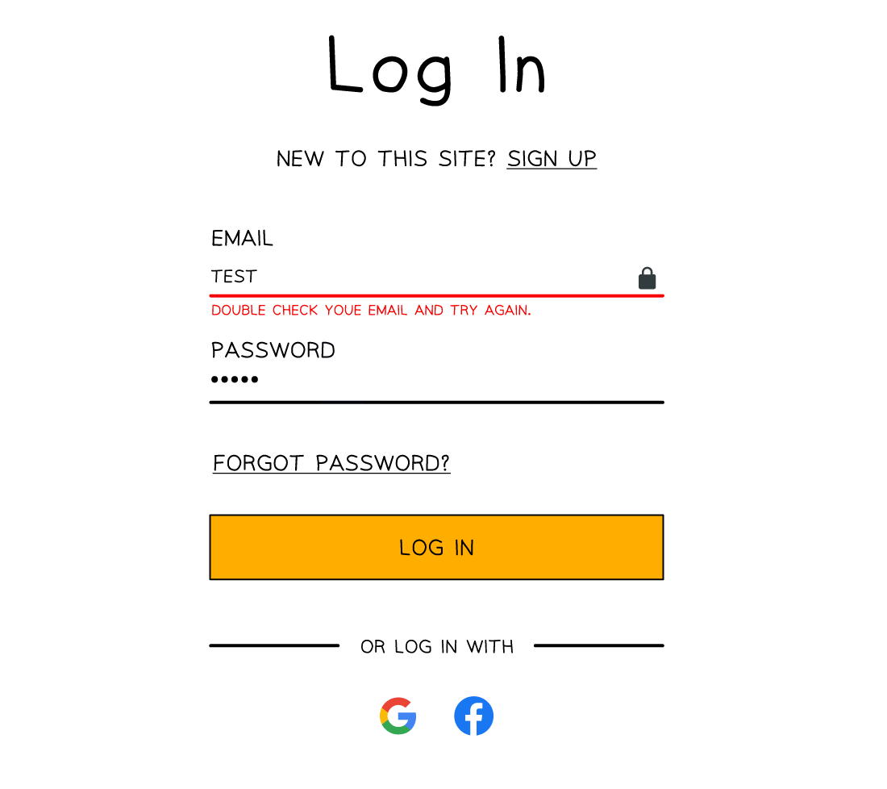
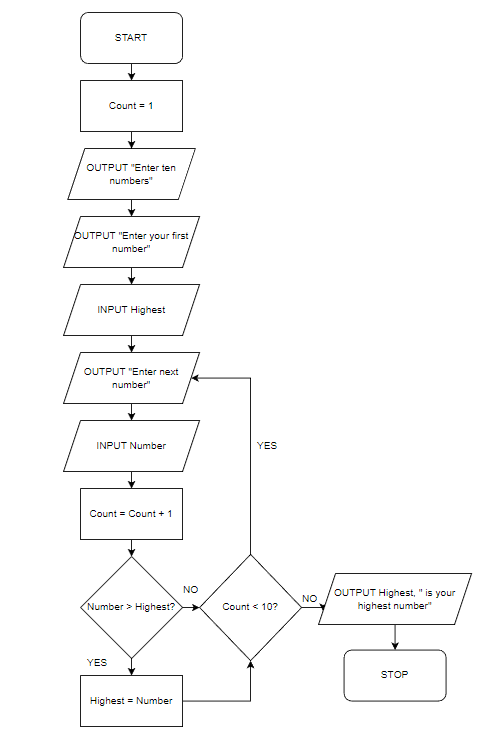
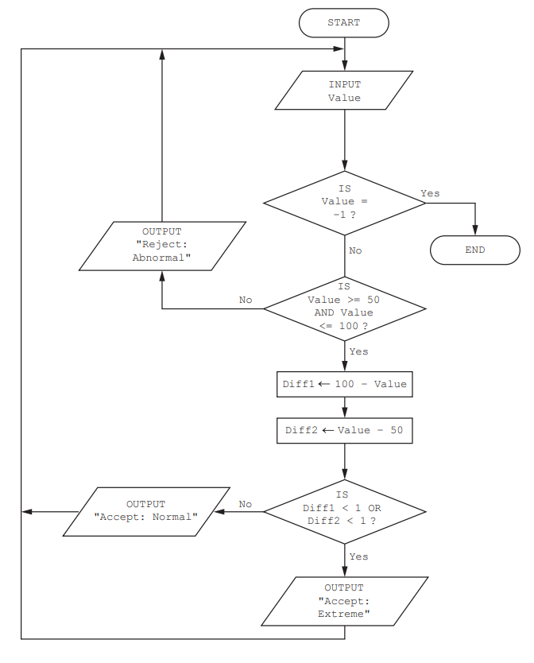

Program Development Life Cycle (Cambridge
Analysis
What is the analysis stage of the program development life cycle?
- The analysis stage of the program development life cycle is to precisely understand the problem the program is intended to solve
What role does abstraction play in the analysis?
- Abstraction is the act of removing unimportant details from the problem to focus on important elements such as:
- Core functionality
- Requirements
- An example of abstraction would be the London underground train route map; travellers do not need to know the geographical layout of the routes, only that getting on at stop A will eventually transport you to stop B


Core functionality
- Using abstraction helps to identify the fundamental component s of what the program is going to solve
- Before tackling a problem, it needs to be clearly understood by everyone working on it
- The overall goal of the solution needs to be agreed as well as any constraints such as limited resources or requiring a platform specific solution
Requirements
- To create a solution, a requirements document is created to define the problem and break it down into clear, manageable, understandable parts by using abstraction and decomposition
- A requirements document labels each requirement, gives it a description as well as success criteria which state how we know when the requirement has been achieved
Design
What is the design stage of the program development life cycle?
- The design stage of the program development life cycle involves using techniques to come up with a blueprint for a solution
- Ways the design of a solution to a problem can be presented include:
- Structure diagrams
- Flowchart
- Pseudocode
Coding
What is the coding stage of the program development life cycle?
- Developers begin programming modules in a suitable programming language that works together to provide an overall solution to the problem
- As each developer programs, they perform iterative testing
- Iterative testing is where each module is tested and debugged thoroughly to make sure it interacts correctly with other modules and accepts data without crashing or causing any errors
- Developers may need to retest modules as new modules are created and changed to make sure they continue to interact correctly and do not cause errors
Testing
What is the testing stage of the program development life cycle?
- Once the overall program or set of programs is created, they are run many times using varying sets of test data
- This ensures the program or programs work as intended as outlined in the initial requirements specification and design and rejects any invalid data that is input
- Examples of test data include alphanumeric sequences to test password validation routines
Computer Sub-Systems
What is a sub-system?
- A sub-system is a smaller part of a computer system that works together with other sub-systems to create fully functional computer system
- A car is a great example of using sub-systems
- A car will only function if its sub-systems all work together, they are:
- Engine
- Breaks
- Wheels etc.
- Sub-systems can be further broken down into even smaller sub-systems such as:
- Engine - spark plugs, sensors, pistons
- In computers, there are five main sub-systems:
Central Processing Unit (CPU) | Memory | Storage | Input devices | Output devices |
|---|---|---|---|---|
Executes instructions | Stores data & instructions temporarily for the CPU (RAM) | Stores data and software permanently (HDD, SSD) | Allows a user to enter information (keyboard, mouse) | Displays information or creates a physical output (monitor, printer) |
- Computer sub-systems can be further broken down into smaller sub-systems such as:
- CPU - control unit, registers & arithmetic logic unit (ALU)
Advantages of sub-systems
- Can help troubleshoot problems in a computer system
- The ability to isolate a sub-system makes it easier to identify and fix issues, as each sub-system can be examined separately
- Developing software relies on the use of different sub-systems to ensure they operate efficiently
- Gives developers and designers a clear picture of how sub-systems help build complex systems
Problem Decomposition
What is decomposition?
- Decomposition is the process of breaking down a large problem into a set of smaller problems
- Benefits of decomposition are:
- Smaller problems are easier to solve
- Each smaller problem can be solved independently of the others
- Smaller problems can be tested independently
- Smaller problems can be combined to produce a solution to the full problem
- Modern computer games are a good example of using decomposition to break down the complexity of the problem into more manageable ’ chunks ’
- Creating an entire game at once would be challenging and inefficient, so it could be decomposed into:
- Levels - Levels can be designed/created/tested/ independently of other levels
- Characters - The mechanics of characters in the game can be designed and created by a separate team
- Landscape - The art team can work on the visual aspects of the game without needing to understand how the game is programmed
- Once all of the smaller problems are completed, joined together a complex game has been created
Inputs, processes, outputs and storage
- Decomposing a problem requires developers to think about four component parts:
- Inputs: data entered into the system
- Processes: subroutines and algorithms that turn inputs and stored data into outputs
- Outputs: data that is produced by the system, such as information on a screen or printed information
- Storage: data that is stored on a physical device, such as on a hard drive or in memory whilst the program is running
Example - Area of a rectangle program
| Inputs | Width of the rectangle Height of the rectangle |
|---|---|
| Processes | Width x height |
| Outputs | Calculated area of the rectangle |
| Storage | Memory: width, height and area stored temporarily |
Designing Algorithms
What is an algorithm?
Cambridge IGCSE 0478 assesses your ability to understand*,* write*, and* interpret algorithms using pseudocode*,* flowcharts*, and* structured design*. This page gives examples in the format and style seen in Paper 2, focusing only on examinable methods.*
- An algorithm is precise set of rules or instructions to solve a specific problem or task
- There are three main ways to design an algorithm
- Structure diagrams
- Flowchart
- Pseudocode
Structure Diagrams
What is a structure diagram?
- Structure diagrams show hierarchical top-down design in a visual form
- Each problem is divided into sub-problems and each sub-problem divided into further sub-problems
- At each level the problem is broken down into more detailed tasks that can be implemented using a single subroutine

- an example of a structure diagram for a mobile application could be:

Flowcharts
What is a flowchart?
- Flowcharts are a visual tool that uses shapes to represent different functions to describe an algorithm
- Flowcharts show the data that is input and output, the processes that take place and any decisions or repetition
- Lines are used to show the flow of control

Example
Flowchart

- The casino would like the algorithm refined so that the user also enters their first name and this is used to greet the user when they access the site
Flow chart

Pseudocode
What is pseudocode?
- Pseudocode is a text-based tool that uses short English words/statements to describe an algorithm
- Pseudocode is more structured than writing sentences in English but is very flexible
Example
- A casino would like a program that asks users to enter an age, if they are 18 or over they can enter the site, if not then they are given a suitable message
Pseudocode
INPUT Age IF Age >= 18
THEN
OUTPUT "Welcome to the site"
ELSE
OUTPUT "Sorry, this site is for users 18 and over"
ENDIF
Pseudocode is not real code —don’t use syntax like print() or input() with brackets. Stick to simple statements like:
INPUT Age
OUTPUT "Welcome"
Adding actual language syntax can lose you marks.
- The casino would like the algorithm refined so that the user also enters their first name and this is used to greet the user when they access the site
Pseudocode
INPUT Age IF Age >= 18
THEN
OUTPUT "Welcome to the site", FName
ELSE
OUTPUT "Sorry, this site is for users 18 and over"
ENDIF
If the question asks you to write an algorithm, default to pseudocode*. Use* flowcharts only when asked or when visual logic helps. Examiners reward clarity, not decoration.
Explaining Algorithms
How do you explain an algorithm?
- A well designed algorithm should be able to be interpreted by a new user and they should be able to explain what it does
- Algorithms can be written using flowcharts, pseudocode or high-level programming language code such as Python
- The purpose of an algorithm is to solve a problem, if a user does not know the goal of the algorithm, then following the algorithm instructions should make its purpose clear
- If the algorithm is complex then additional ways to understand the problem could be:
- Look for comments in the code
- Consider the context of where the algorithm is being used
- Test the algorithm with different inputs
- Look at the following algorithm, can you explain what it does?
// Pseudocode
Count ← 1
Number ← 0
Total ← 0
REPEAT
INPUT Number
Total ← Total + Number
Count ← Count + 1
UNTIL Count > 10
OUTPUT Total
- The purpose of the algorithm is to add ten user-entered numbers together and output the total
- The processes are:
- initializing three variables (Count, Number, Total)
- inputting a user number
- adding to two variables (Total, Count)
- repeating nine more times
- outputting the final Total value
The pseudocode algorithm shown has been written by a teacher to enter marks for the students in her class and then to apply some simple processing.
Count ← 0
REPEAT
INPUT Score[Count]
IF Score[Count] >= 70 THEN
Grade[Count] ← "A"
ELSE
IF Score[Count] >= 60 THEN
Grade[Count] ← "B"
ELSE
IF Score[Count] >= 50 THEN
Grade[Count] ← "C"
ELSE
IF Score[Count] >= 40 THEN
Grade[Count] ← "D"
ELSE
IF Score[Count] >= 30 THEN
Grade[Count] ← "E"
ELSE
Grade[Count] ← "F"
ENDIF
ENDIF
ENDIF
ENDIF
ENDIF
Count ← Count + 1
UNTIL Count = 30
Describe what happens in this algorithm.
[3]
Answer
Any 3 of:
- Inputted marks are stored in the array Score[] [1]
- Marks are then checked against a range of boundaries [1]
- A matching grade is assigned to each mark that has been input [1]
- The grade is then stored in the array Grade[] [1]
- At the same index as the inputted mark [1]
- The algorithm finishes after 30 marks have been input [1]
Linear Search & Bubble Sort
Linear Search
What is a searching algorithm?
- Searching algorithms are precise step-by-step instructions that a computer can follow to efficiently locate specific data in massive datasets
What is a linear search?
- A linear search starts with the first value in a dataset and checks every value one at a time until all values have been checked
- A linear search can be performed even if the values are not in order
How do you perform a linear search?
| Step | Instruction |
|---|---|
| 1 | Check the first value |
| 2 | IF it is the value you are looking for - STOP! |
| 3 | ELSE move to the next value and check |
| 4 | REPEAT UNTIL you have checked all values and not found the value you are looking for |
You will not be asked to perform a linear search on a dataset in the exam, you will be expected to understand how to do it and know the advantages and disadvantages of performing it
// A linear search in Pseudocode
// Declare variables
DECLARE data : ARRAY[1:5] OF INTEGER
DECLARE target : INTEGER
DECLARE found : BOOLEAN
// Assign values to the array and target
data ← [5, 2, 8, 1, 9]
target ← 11
found ← FALSE // Start with the assumption that the target is not found
// Loop through each element in the array
FOR index ← 1 TO 5
// Check if the current element matches the target
IF data[index] = target THEN
found ← TRUE
OUTPUT "Target found"
ENDIF
NEXT index
// After the loop, check if the target was never found
IF found = FALSE THEN
OUTPUT "Target not found"
ENDIF
# A linear search in Python code
# Identify the dataset to search, the target value and set the initial flag
data = [5, 2, 8, 1, 9]
target = 11
found = False
# Loop through each element in the data
for index in range(0, len(data)): # loop to go through all elements
# Check if the current element matches the target
if data[index] == target:
# If found, output message
found = True
print("Target found")
break # Exit the loop if the target is found
# If the target is not found, output a message
if not found:
print("Target not found")
Bubble Sort
What is a sorting algorithm?
- Sorting algorithms are precise step-by-step instructions that a computer can follow to efficiently sort data in massive datasets
What is a bubble sort?
- A bubble sort is a simple sorting algorithm that starts at the beginning of a dataset and checks values in ‘pairs’ and swaps them if they are not in the correct order
- One full run of comparisons from beginning to end is called a ’ pass ', a bubble sort may require multiple ’ passes ’ to sort the dataset
- The algorithm is finished when there are no more swaps to make
How do you perform a bubble sort?
| Step | Instruction |
|---|---|
| 1 | Compare the first two values in the dataset |
| 2 | IF they are in the wrong order… - Swap them |
| 3 | Compare the next two values |
| 4 | REPEAT step 2 & 3 until you reach the end of the dataset (pass 1) |
| 5 | IF you have made any swaps… - REPEAT from the start (pass 2,3,4…) |
| 6 | ELSE you have not made any swaps… - STOP! the list is in the correct order |

In the exam you do not have to show every swap that takes place in a bubble sort. You can show the outcome of a bubble sort at the end of each pass. If you have the outcome of each pass correct then a bubble sort has been implemented correctly and all marks will be given!
// A bubble sort in Pseudocode
// Declare the array
DECLARE nums : ARRAY[1:11] OF INTEGER
nums ← [66, 7, 69, 50, 42, 80, 71, 321, 67, 8, 39]
// Store the length of the array
DECLARE numlength : INTEGER
numlength ← 11
// Set a flag to check if any swaps are made
DECLARE swaps : BOOLEAN
swaps ← TRUE
// Repeat the loop while swaps are being made
WHILE swaps = TRUE
swaps ← FALSE
// Loop through the array from the start to the second-last unsorted element
FOR y ← 1 TO numlength - 1
// If the current number is greater than the next number, swap them
IF nums[y] > nums[y + 1] THEN
DECLARE temp : INTEGER
temp ← nums[y]
nums[y] ← nums[y + 1]
nums[y + 1] ← temp
swaps ← TRUE // A swap was made
ENDIF
NEXT y
// Decrease the range as the last value is now sorted
numlength ← numlength - 1
ENDWHILE
// Output the sorted array
FOR i ← 1 TO 11
OUTPUT nums[i]
NEXT i
# A bubble sort in Python code
# Unsorted dataset
nums = [66, 7, 69, 50, 42, 80, 71, 321, 67, 8, 39]
# Count the length of the dataset
numlength = len(nums)
# Set a flag to initiate the loop
swaps = True
while swaps: # While any swap is made, continue
swaps = False
# Loop through the dataset
for y in range(numlength - 1): # Compare adjacent elements
if nums[y] > nums[y + 1]: # If the first number is bigger
# Swap the numbers using a temporary variable
nums[y], nums[y + 1] = nums[y + 1], nums[y]
swaps = True # Mark that a swap was made
# Each iteration confirms that the last element is in place
numlength -= 1
# Print the sorted list
print(nums)
Other Standard Methods of a Solution
Totalling & Counting
What is totalling?
- Totalling is keeping a running total of values entered into the algorithm
- An example may be totalling a receipt for purchases made at a shop
- In the example below, the total starts at 0 and adds up the user inputted value for each item in the list
// Pseudocode
Total ← 0
FOR Count ← 1 TO ReceiptLength
INPUT ItemValue
Total ← Total + itemValue
NEXT Count
OUTPUT Total
What is counting?
- Counting is when a count is incremented or decremented by a fixed value, usually 1, each time it iterates
- Counting keeps track of the number of times an action has been performed
- Many algorithms use counting, including the linear search to track which element is currently being considered
- In the example below, the count is incremented and each pass number is output until fifty outputs have been produced
// Pseudocode
Count ← 0
DO
OUTPUT “Pass number”, Count
Count ← Count + 1
UNTIL Count >= 50
- In the example below, the count is decremented from fifty until the count reaches zero. An output is produced for each pass
// Pseudocode
Count ← 50
DO
OUTPUT “Pass number”, Count
Count ← Count - 1
UNTIL Count <= 0
Maximum, Minimum & Average
- Finding the largest (max), smallest (min) and average (mean) values in a list are frequently used method in algorithms
- Examples could include:
- Calculating the maximum and minimum student grades or scores in a game
- Calculating the average grade of students in a class test
- Calculating the maximum and minimum student grades or scores in a game
- In the example below, in a list of student test scores, the highest, lowest and average scores are calculated and displayed to the screen
// Pseudocode
Total ← 0
Scores ← [25, 11, 84, 91, 27]
Highest ← max(Scores)
Lowest ← min(Scores)
# Loop through the scores in the list (indexing starts from 0)
FOR Count ← 0 TO LENGTH(Scores) - 1
# Add score to total
Total ← Total + Scores[Count]
NEXT Count
# Calculate average
Average ← Total / LENGTH(Scores)
OUTPUT "The highest score is:", Highest
OUTPUT "The lowest score is:", Lowest
OUTPUT "The average score is:", Average
Validation & Verification
Validation
What is validation?
- Validation is an automated process where a computer checks if a user input is sensible and meets the program’s requirements.
- There are six categories of validation which can be carried out on fields and data types, these are
- There can be occasions where more than one type of validation will be used on a field
- An example of this could be a password field which could have a length, presence and type check on it

Range check
- Ensures the data entered as a number falls within a particular range
// Pseudocode
// Ensures a percentage number is between 0-100 inclusive
OUTPUT “Enter a number between 0 and 100”
REPEAT
INPUT Number
IF Number < 0 OR Number > 100
THEN
OUTPUT “Number is not between 0 and 100, please try again”
ENDIF
UNTIL Number >= 0 AND Number <= 100
# Python
# Ensures a user's age has been entered and falls between the digits of <b>0-110 inclusive
age = int(input("Enter your age"))
while age < 0 or age > 110:
age = int(input("Enter your age, ensure it is between 0-110"))
Length check
- Checks the length of a string
// Pseudocode
//Ensures a pin number can only contain 4 digits
OUTPUT “Please enter your 4 digit bank PIN number”
REPEAT
INPUT Pin
IF LENGTH(Pin) <> 4
THEN
OUTPUT “Your pin number must be four characters in length, please try again”
ENDIF
UNTIL LENGTH(Pin) = 4
# Python
# Ensures a password is 8 characters or more
password_length = len(password)
while password_length < 8:
password = input("Enter a password which is 8 or more characters")
Type check
- Check the data type of a field
// Pseudocode
// Ensures an age should be entered as an integer (whole number)
OUTPUT “Enter an integer number”
REPEAT
INPUT Number
IF Number <> DIV(Number, 1)
THEN
OUTPUT “Not a whole number, please try again”
ENDIF
UNTIL Number = DIV(Number , 1)
# Python
# Ensures an age should be entered as an integer (whole number)
age = input("Enter your age")
while age.isdigit() == False:
print("enter a number")
age = input("Enter your age as a number")
Presence check
- Looks to see if any data has been entered in a field
// Pseudocode
// Ensures username and password are both entered
OUTPUT “Enter your username”
REPEAT
INPUT Username
IF Username = “”
THEN
OUTPUT “No username entered, please try again”
ENDIF
UNTIL Username <> “”
# Python
# Ensures when registering for a website the name field is not left blank
name = input("Enter your name")
while name == "":
name = input("You must enter your name here")
Format check
- Ensures that the data has been entered in the correct format
- Format checks are done using pattern matching and string handling
// Pseudocode
// Ensures a six digit ID number is entered against the format "XX9999" where X is an uppercase alphabetical letter and 9999 is a four digit number
INPUT IDNumber
IF LENGTH(IDNumber) <> 6 THEN
OUTPUT "ID number must be 6 characters long"
ENDIF
ValidChars ← "ABCDEFGHIJKLMNOPQRSTUVWXYZ"
FirstChar ← SUBSTRING(IDNumber, 1, 1)
ValidChar ← False
Index ← 1
WHILE Index <= LENGTH(ValidChars) AND ValidChar = False DO
IF FirstChar = SUBSTRING(ValidChars, Index, 1) THEN
ValidChar ← True
ENDIF
Index ← Index + 1
ENDWHILE
IF ValidChar = False THEN
OUTPUT "First character is not a valid uppercase alphabetical character"
ENDIF
SecondChar ← SUBSTRING(IDNumber, 2, 1)
ValidChar ← False
Index ← 1
WHILE Index <= LENGTH(ValidChars) AND ValidChar = False DO
IF SecondChar = SUBSTRING(ValidChars, Index, 1) THEN
ValidChar ← True
ENDIF
Index ← Index + 1
ENDWHILE
IF ValidChar = False THEN
OUTPUT "Second character is not a valid uppercase alphabetical character"
ENDIF
Digits ← INT(SUBSTRING(IDNumber, 3, 4))
IF Digits < 0 OR Digits > 9999 THEN
OUTPUT "Digits invalid. Enter four valid digits in the range 0000-9999"
ENDIF
//Explanation
// The first two characters are checked against a list of approved characters
//The first character is compared one at a time to each valid character in the ValidChars array
//If it finds a match it stops looping and sets ValidChar to True
//The second character is then compared one at a time to each valid character in the ValidChars array
//If it finds a match then it also stops looping and sets ValidChar to True
//Casting is used on the digits to turn the digit characters into numbers
//Once the digits are considered a proper integer they can be checked to see if they are in the appropriate range of 0-9999
//If any of these checks fail then an appropriate message is output
# Python
# Ensures an email contains a '@' and ' full stop (.) which follows the format "email@address.com"
email = input("Enter your email address")
while "@" not in email or "." not in email:
email = input("Please enter a valid email address")
Check digits
- Check digits are numerical values that are the final digit of a larger code such as a barcode or an International Standard Book Number (ISBN)
- They are calculated by applying an algorithm to the code and are then attached to the overall code
Verification
What is verification?
- Verification is the act of checking data is accurate when entered into a system
- Mistakes such as creating a new account and entering a password incorrectly mean being locked out of the account immediately
- Verification methods include:
- double entry checking
- visual checks
Double entry checking
- Double entry checking involves entering the data twice in separate input boxes and then comparing the data to ensure they both match
- If they do not, an error message is shown
// Pseudocode
REPEAT
OUTPUT “Enter your password”
INPUT Password
OUTPUT “Please confirm your password”
INPUT ConfirmPassword
IF Password <> ConfirmPassword
THEN
OUTPUT “Passwords do not match, please try again”
ENDIF
UNTIL Password = ConfirmPassword
Visual checks
- Visual checks involve the user visually checking the data on the screen
- A popup or message then asks if the data is correct before proceeding
- If it isn’t the user then enters the data again
// Pseudocode
REPEAT
OUTPUT “Enter your name”
INPUT Name
OUTPUT “Your name is: “, Name, “. Is this correct? (y/n)”
INPUT Answer
UNTIL Answer = “y”
Describe the purpose of validation and verification checks during data entry. Include an example for each.
[4]
Answers
Validation check
[1] for description:
- To test if the data entered is possible / reasonable / sensible
- A range check tests that data entered fits within specified values
[1] for example:
- Range / length / type / presence / format
Verification check
[1] for description:
- To test if the data input is the same as the data that was intended to be input
- A double entry check expects each item of data to be entered twice and compares both entries to check they are the same
[1] for example:
- Visual / double entry
Suitable Test Data
What is suitable test data?
- Suitable test data is specially chosen to test the functionality of a program or design
- Developers or test-users would pick a selection of test data from the following categories
- The results would be compared to the expected results to check if the algorithm/program works as intended
- Each category is explained within the context of a simple Python program below, comments have been added to help explain the processes
# Ask for user's name
name = input("What is your name? ")
# Ask for user's age
age = int(input("How old are you? "))
# Check if age is between 12 and 18
if age >= 12 and age <= 18:
print("Welcome, " + name + "! Your age is accepted.")
else:
print("Sorry, " + name + ". Your age is not accepted.")
Normal data
- Normal test data is data that should be accepted in the program
- An example would be a user entering their age as 16 into the age field of the program
Abnormal data
- Abnormal test data is data that is the wrong data type
- An example would be a user entering their age as “F” into the age field of the program
Extreme data
- Extreme test data is the maximum and minimum values of normal data that are accepted by the system
- An example would be a user entering their age as 18 or 12 into the age field of the program
Boundary data
- Boundary test data is similar to extreme data except that the values on either side of the maximum and minimum values are tested
- The largest and smallest acceptable value is tested as well as the largest and smallest unacceptable value
- An example would be a user entering their age as 11 or 19 into the age field of the program
Selecting suitable test data
| Type of Test | Input | Expected Output |
|---|---|---|
| Normal | 14 | Accepted |
| Normal | 16 | Accepted |
| Extreme | 12 | Accepted |
| Extreme | 18 | Accepted |
| Abnormal | H | Rejected |
| Abnormal | @ | Rejected |
| Boundary | 11 | Rejected |
| Boundary | 19 | Rejected |
A programmer has written an algorithm to check that prices are less than $10.00
These values are used as test data: 10.00 9.99 ten
State why each value was chosen as test data.
[3]
Answers
10.00 is boundary or abnormal data and should be rejected as it is out of range [1]
9.99 is boundary, extreme and normal data and should be accepted as it is within the normal range [1]
Ten is abnormal data and should be rejected as it is the wrong value type [1]
Trace Tables
What is a trace table?
- A trace table is used to test algorithms and programs for logic errors that appear when an algorithm or program executes
- Trace tables can be used with flowcharts, pseudocode or program code
- A trace table can be used to:
- Discover the purpose of an algorithm by showing output data and intermediary steps
- Record the state of the algorithm at each step or iteration
- Each stage of the algorithm is executed step by step.
- Inputs, outputs, variables and processes can be checked for the correct value when the stage is completed
Trace table walkthrough
- Below is a flowchart to determine the highest number of ten user-entered numbers
- The algorithm prompts the user to enter the first number which automatically becomes the highest number entered
- The user is then prompted to enter nine more numbers.
- If a new number is higher than an older number then it is replaced
- Once all ten numbers are entered, the algorithm outputs which number was the highest
- Example test data to be used is: 4, 3, 7, 1, 8, 3, 6, 9, 12, 10

Trace Table: Highest number
| Count | Highest | Number | Output |
|---|---|---|---|
| 1 | Enter ten numbers | ||
| 4 | Enter your first number | ||
| 2 | 3 | Enter your next number | |
| 3 | 7 | 7 | |
| 4 | 1 | ||
| 5 | 8 | 8 | |
| 6 | 3 | ||
| 7 | 6 | ||
| 8 | 9 | 9 | |
| 9 | 12 | 12 | |
| 10 | 10 | 12 is your highest number |
The flowchart represents an algorithm. The algorithm will terminate if –1 is entered.

Complete the trace table for the input data: 50, 75, 99, 28, 82, 150, –1, 672, 80
[4]
| Value | Diff1 | Diff2 | Output |
|---|---|---|---|
Answer
[1] for each correct column
| Value | Diff1 | Diff2 | Output |
|---|---|---|---|
| 50 | 50 | 0 | Accept: Extreme |
| 75 | 25 | 25 | Accept: Normal |
| 99 | 1 | 49 | Accept: Normal |
| 28 | Reject: Abnormal | ||
| 82 | 18 | 32 | Accept: Normal |
| 150 | Reject: Abnormal | ||
| -1 |
Identifying Errors
Cambridge IGCSE 0478 regularly assesses your ability to identify, describe, and fix syntax*,* logic*, and* runtime errors*, especially using* trace tables and dry runs*. This page mirrors the question style and mark scheme language of Paper 2.*
- Designing algorithms is a skill that must be developed and when designing algorithms, mistakes and issues will occur
- Trace tables can also help to find any kind of error in a program or algorithm
- There are three main categories of errors that when designing algorithms a programmer must be able to identify & fix, they are:
- Syntax errors
- Logic errors
- Runtime errors
When describing an error:
- Use “ prevents the program from running ” for syntax
- Use “ produces incorrect output ” for logic
- Use “ causes the program to crash ” for runtime
These are the exact phrases that earn marks in the exam.
- A syntax error is an error that breaks the grammatical rules of a programming language and stops it from running
- Examples of syntax errors are:
- Typos and spelling errors
- Missing or extra brackets or quotes
- Misplaced or missing semicolons
- Invalid variable or function names
- Incorrect use of operators
- Incorrectly nested loops & blocks of code
def generate_username(first_name, last_name)
username = f"{first_name[0]}{last_name[0]}{last_name[:3]}"
return username
def main():
# -----------------------------------------------------------------------
# Prompts the user for personal information and displays a suggested username
# -----------------------------------------------------------------------
first_name = imput("Enter your first name: ")
last_name = input("Enter your last name: ")
usdrname = generate_username(first_name, last_name)
print(f"Here's a suggested username: {username}")
# ------------------------------------------------------------------------
# Main program
# ------------------------------------------------------------------------
main</code></pre></td></tr><tr><th colspan="1" rowspan="1"><p><b>Python code - without syntax errors</b></p></th></tr><tr><td colspan="1" rowspan="1"><pre><code>def generate_username(first_name, last_name):
username = f"{first_name[0]}{last_name[0]}{last_name[:3]}"
return username
def main():
# -----------------------------------------------------------------------
# Prompts the user for personal information and displays a suggested username
# -----------------------------------------------------------------------
first_name = input("Enter your first name: ")
last_name = input("Enter your last name: ")
username = generate_username(first_name, last_name)
print(f"Here's a suggested username: {username}")
# ------------------------------------------------------------------------
# Main program
# ------------------------------------------------------------------------
main()
# Syntax errors
# Missing semicolon <code>
def generate_username(first_name, last_name) # Incorrectly spelt function name
first_name = imput("Enter your first name: ")# Typo in variable name
usdrname = generate_username(first_name, last_name)# Missing parenthesis
Examiners won’t give marks for vague phrases like “the program didn’t work.”
You must name the error type*,* locate it*, and* explain the impact on the output or execution.
- A logic error is where incorrect code is used that causes the program to run, but produces an incorrect output or result
- Logic errors can be difficult to identify by the person who wrote the program, so one method of finding them is to use ’ Trace Tables ’
- Examples of logic errors are:
- Incorrect use of operators (< and >)
- Logical operator confusion (AND for OR)
- Looping one extra time
- Indexing arrays incorrectly (arrays indexing starts from 0)
- Using variables before they are assigned
- Infinite loops
def calculate_area(length, width):
###
Calculates the area of a rectangle
Inputs:
length (float): The length of the rectangle (positive value)
width (float): The width of the rectangle (positive value)
Returns:
float: The calculated area of the rectangle
Raises:
ValueError: If either length or width is non-positive
###
if length < 0 or width < 0:
raise ValueError("Length and width must be positive values.")
area = length * width
return area
def main():
# -----------------------------------------------------------------------
Prompts the user for rectangle dimensions and prints the calculated area
# -----------------------------------------------------------------------
try:
length = float(input("Enter the length of the rectangle: "))
width = float(input("Enter the width of the rectangle: "))
# Call the area calculation function
area = calculate_area(length, width)
print(f"The area of the rectangle is approximately {area:.2f} square units.")
except ValueError as error:
print(f"Error: {error}")
# -----------------------------------------------------------------------
# Main program
# -----------------------------------------------------------------------
main()
| Test number | Test data | Expected outcome | Actual outcome | Changes needed? (Y/N) |
|---|---|---|---|---|
| 1 | Length = 5 Width = 5 |
“The area of the rectangle is approximately 25 square units.” | “The area of the rectangle is approximately 25.00 square units.” | N |
| 2 | Length = 10 Width = 0 |
“Length and width must be positive values.” | “The area of the rectangle is approximately 0.00 square units.” | Y should not accept 0 input as not positive |
-
Logic error located on line
if length < 0 or width < 0: -
Logic error identified in expression
< 0, should be<= 0so that 0 is not accepted as valid input for length or width -
A runtime error is where an error causes a program to crash
-
Examples of runtime errors are:
- Dividing a number by 0
- Index out of the range of an array
- Unable to read or write a drive
def calculate_area(length, width):
"""
Calculates the area of a rectangle
Inputs:
length (float): The length of the rectangle (positive value)
width (float): The width of the rectangle (positive value)
Returns:
float: The calculated area of the rectangle
Raises:
ValueError: If either length or width is non-positive
"""
if length < 0 or width < 0:
raise ValueError("Length and width must be positive values.")
area = length * width
return area
def main():
# -----------------------------------------------------------------------
Prompts the user for rectangle dimensions and prints the calculated area
# -----------------------------------------------------------------------
try:
length = float(input("Enter the length of the rectangle: "))
width = float(input("Enter the width of the rectangle: "))
# Call the area calculation function
area = calculate_area(length, width)
print(f"The area of the rectangle is approximately {area:.2f} square units.")
except ValueError as error:
print(f"Error: {error}")
# -----------------------------------------------------------------------
# Main program
# -----------------------------------------------------------------------
main()
| Test number | Test data | Expected outcome | Actual outcome | Changes needed? (Y/N) |
|---|---|---|---|---|
| 1 | Length = 10 Width = 10 |
“The area of the rectangle is approximately 100 square units.” | “The area of the rectangle is approximately 100.00 square units.” | N |
| 2 | Length = “abc” Width = 0 |
“Program could not convert string to float, try again” | Program crashed | Y should give error message and ask user to enter again |
- Runtime error located in
try:
length = float(input("Enter the length of the rectangle: "))
width = float(input("Enter the width of the rectangle: "))
# Call the area calculation function
area = calculate_area(length, width)
print(f"The area of the rectangle is approximately {area:.2f} square units.")
except ValueError as error:
print(f"Error: {error}")
- Runtime error identified as missing iteration (while loop) so program does not ask user to enter width and height again
- Corrected code now includes a while loop
while True:
try:
length = float(input("Enter the length of the rectangle: "))
width = float(input("Enter the width of the rectangle: "))
# Call the area calculation function
area = calculate_area(length, width)
print(f"The area of the rectangle is approximately {area:.2f} square units.")
break # Exit the loop if successful
except ValueError as error:
print(f"Error: {error}")
print("Please enter positive values for length and width.")
Writing & Amending Algorithms
Algorithmic Thinking
What is algorithmic thinking?
- Algorithmic thinking is the process of creating step-by-step instructions in order to produce a solution to a problem
- Algorithmic thinking requires the use of abstraction and decomposition to identify each individual step
- Once each step has been identified, a precise set of rules (algorithm) can be created and the problem will be solved
- An example of algorithmic thinking is following a recipe, if the recipe is followed precisely it should lead to the desired outcome
- A set of traffic lights is an example of how algorithmic thinking can lead to solutions being automated
Writing algorithms in an exam can be challenging and time consuming. It’s important to allocate your time carefully to not spend too little or too long writing an algorithm
You will likely make mistakes and rewrite your algorithm a few times. Use scrap paper or the back of your exam paper if possible to sketch out your ideas before committing to your answer. This will make your answer clearer, neater and easier to read, follow and understand
You may wish to chunk your algorithm into parts initially, for example, “This part will enter the grades”, “this part will calculate the total”, and “This part will allocate grades”. You can then put the whole algorithm together in order later
Make a plan before you start answering the question and writing your algorithm. A plan can be simple but allows you to order your thoughts, for example:
Part 1: Declare and initialise variables
Part 2: Allocate marks for each subject
Part 3: Allocate grades for each student’s subject
Part 4: Include a loop
Part 5: Output all necessary data
Pseudocode does not have a syntax, therefore you can write an algorithm in any way which is easily understandable. Caution is advised to stick to IGCSE specification standards to ensure your answer is consistent and easy for examiners to follow
Be sure to use variable names and data provided in the question as given. Failure to do so will lose you marks
Remember to comment on your code. It helps both you and the examiner understand your answer and also awards marks in the mark scheme!